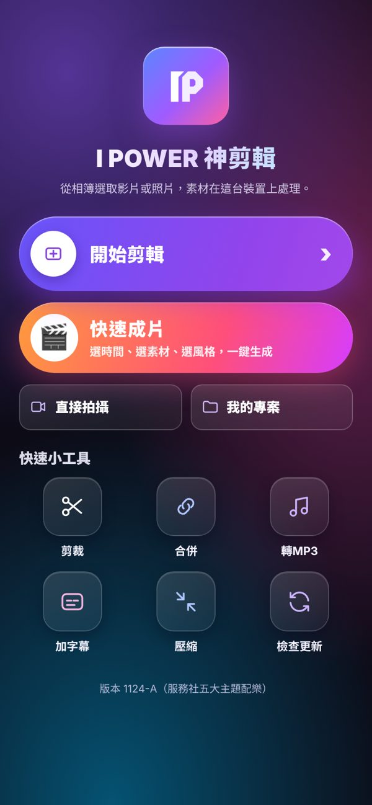
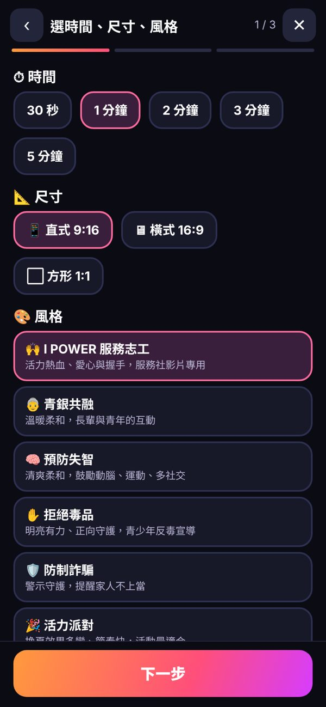
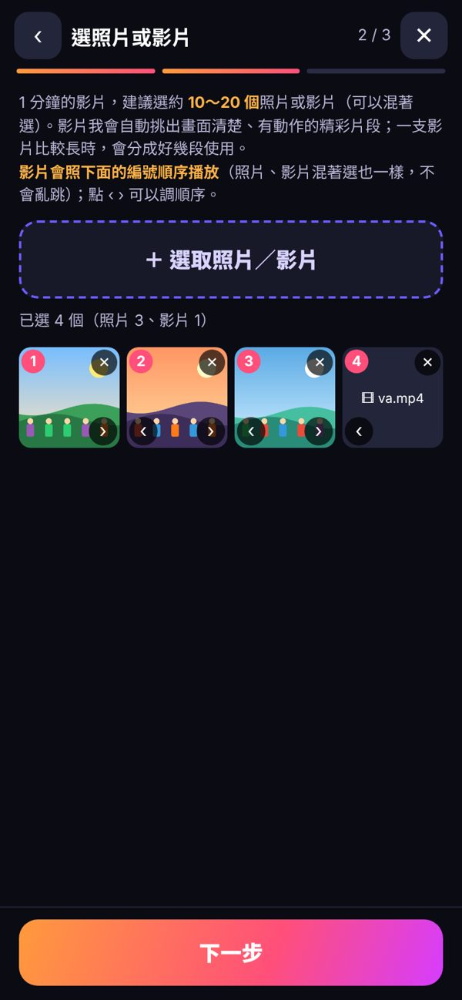
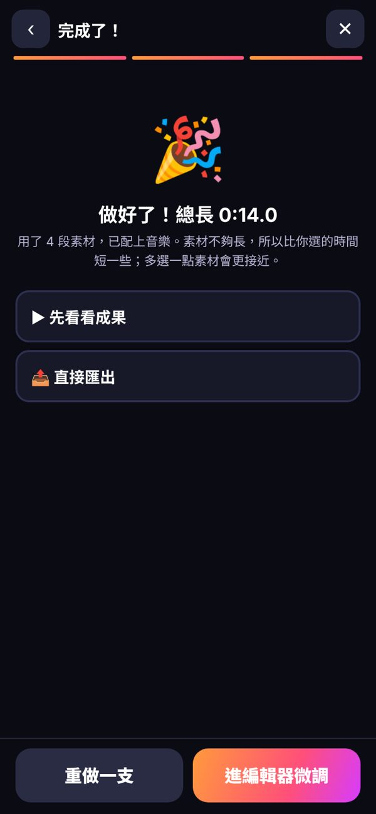
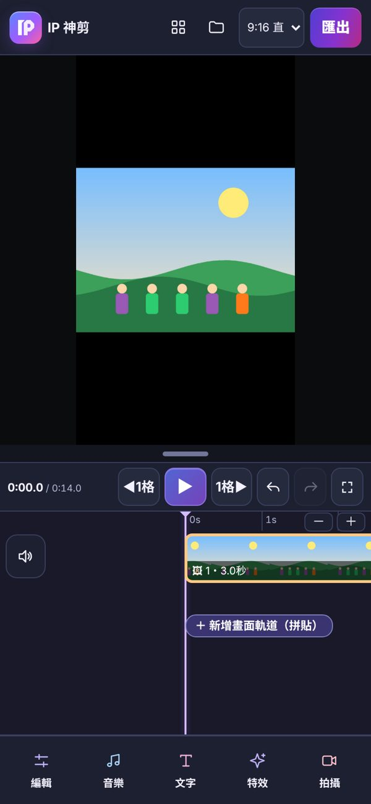
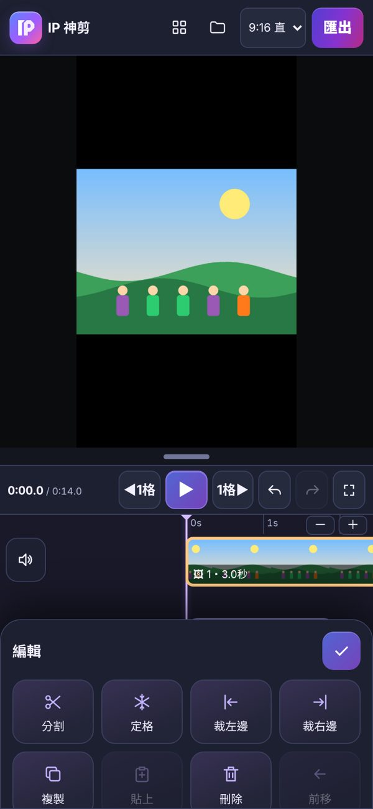
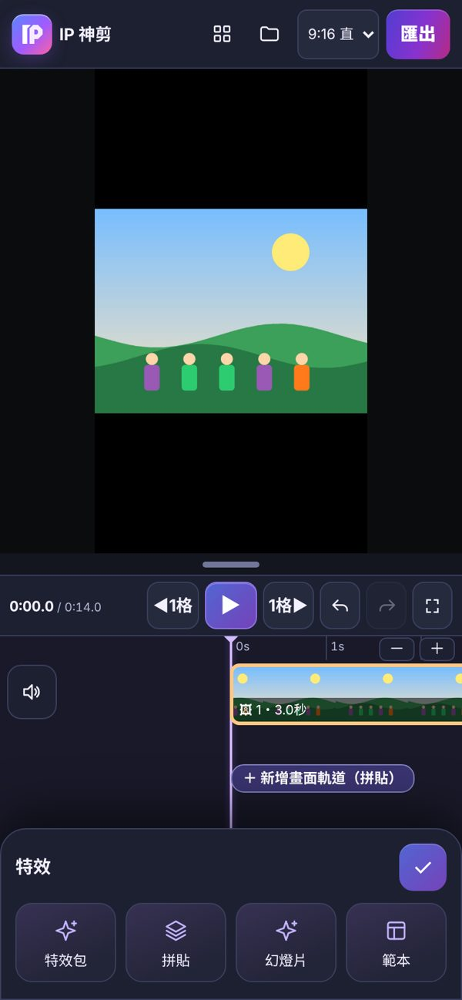
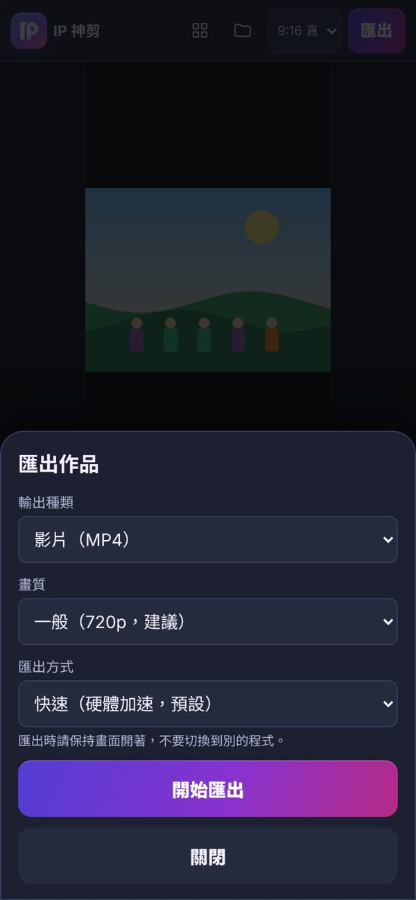

快速成片：步驟 1～4，自動剪好整支影片。
進階剪輯：步驟 5～9，想更精緻再微調。
進階剪輯：步驟 5～9，想更精緻再微調。
1
點「快速成片」
新手首選！
自動幫你剪好整支影片

2
選風格、長度、比例
風格決定配樂與字幕
長度與比例依平台選

3
挑選你的素材
照片、影片都可以
用 ‹ › 調整順序，✕ 刪除

4
一鍵完成
自動剪好、配上音樂
先看成果，滿意就匯出

5
進編輯器微調
想更精緻？
按「進編輯器微調」

6
點素材 → 橘框拉左右
裁短、還原都能拖
長按素材可移動順序

7
編輯工具箱
分割、複製、貼上、刪除
速度、關鍵影格都在這

8
特效、拼貼、範本
綜藝特效、色彩濾鏡
第2軌放貼圖與文字

9
匯出作品
選 MP4、畫質
匯出時請保持畫面開著
